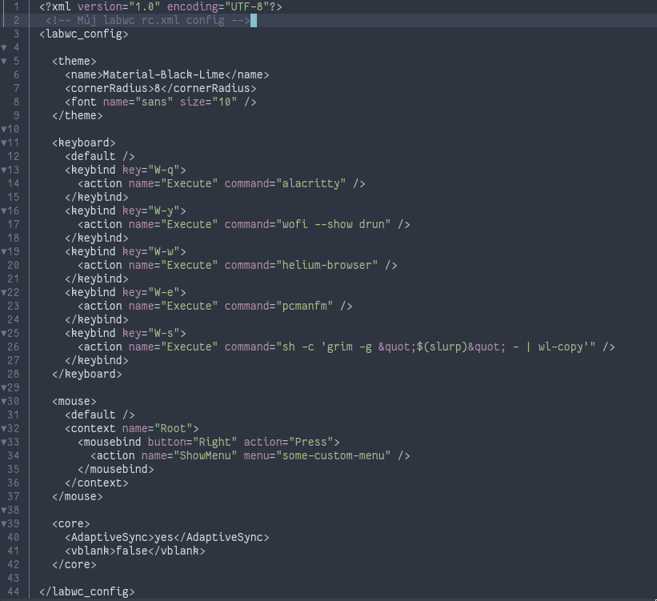

Cíl kapitoly: Přiblížit způsob nastavení kompozitoru, který plně vychází z osvědčeného formátu legendárního Openboxu, a popsat strukturu konfiguračních souborů.
Jednou z největších předností Labwc je jeho zpětná kompatibilita s konfiguračními soubory Openboxu (X11). Uživatelé tak nemusí složitě studovat nové syntaxe nebo skriptovací jazyky. Veškeré nastavení se provádí pomocí jednoduchých a přehledných textových souborů, které se typicky nacházejí ve složce ~/.config/labwc/.
MOZ_ENABLE_WAYLAND=1).Labwc plně podporuje formát témat z Openboxu (.obt nebo složky s formátem XBM). Vzhled záhlaví oken, tlačítek a rámečků lze jednoduše stáhnout z komunitních fór (např. Box-Look) a aplikovat bez jakýchkoliv úprav.
